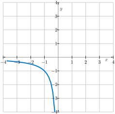
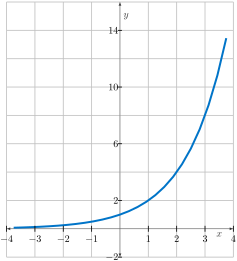
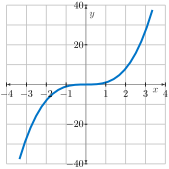
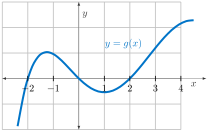
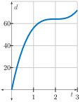
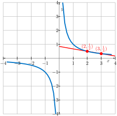
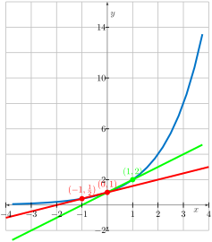
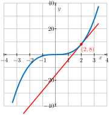

Print preview
Handout Daily Prep 1.3 - The Derivative of a Function at a Point
Section Overview
Up next in our discussions is the definition of the foundational idea of nearly all first semester calculus: the derivative of a function at a point. As you will see soon, the derivative relies upon the ideas of average rate of change and limits. Indeed, the derivative is all about change that is happening instantaneously, and that instantaneous rate is the limit of corresponding average rates. One especially important note at the outset: the definition of the derivative is notationally complicated. As you read and study, pay close attention to the notation used in the definition of the derivative, and strive to not only know that notation by heart, but to make sense of it for yourself.
This section covers the following concepts: Average and instantaneous rate of change. Definition of the derivative at a point. Differentiability. Units of the derivative. Slope of the tangent line.
Section Basic learning objectives
These are the tasks you should be able to perform with reasonable fluency when you arrive at our next class meeting. Important new vocabulary words are indicated in italics.
-
State the definition of average rate of change and the definition of instantaneous rate of change of a function \(f\text{.}\) Explain the difference between these two quantities.
-
Illustrate the average rate of change and the instantaneous rate of change on the graph of a function.
-
Describe the derivative in terms of the slope of a tangent line.
-
Give the units of the derivative of a function, given the units of the function and of the domain variable.
Section To prepare for class
Complete all actions listed below. Respond to the questions highlighted with Submit.
A single .pdf should be uploaded to D2L Brightspace. All answers should be briefly justified, whether justification is specifically requested or not.
-
Read the beginning of section 1.3 (up until the preview activity).
-
[Submit] Do Preview Activity 1.3.1.
-
(Optional) Watch video solution to Preview Activity 1.3.1.
-
-
Explore this applet: Derivative at a Point
-
[Submit] Explore the applet: Investigating the Derivative of a Function at a Point. Then, explain what the value of \(m\) in the applet represents. How can the applet be used to estimate the value of \(f'(3)\text{?}\) What is the approximate value of \(f'(3)\text{?}\)
-
Do these exercises using this applet: Secant and Tangent Lines.
-
Let \(f(x) = 1/x\text{.}\)
Figure 8. The graph of \(f(x)=1/x\) for \(x < 0\text{.}\) -
Sketch the rest of the graph of \(f(x)\text{.}\)
-
Use the applet to determine what happens to these secant lines as \(h \rightarrow 0\text{.}\) This unique line is called the tangent line. What is the apparent slope of this tangent line?
-
-

Figure 9. The graph of \(f(x)=2^x\text{.}\) -
Determine an equation for the secant line through \((0,g(0))\) and \((1,g(1))\text{.}\) Illustrate on the same diagram.
-
Based on your results above, what can you say about the slope of the tangent line to \(g(x)\) at \(x=0\text{?}\) It has a slope between...
-
Use the applet to determine what happens to secant lines through \((0,g(0))\) and \((h,g(h))\) as \(h \rightarrow 0\text{.}\) Form a hypothesis about the slope of the tangent line to \(g(x)\) at \(x=0\text{.}\)
-
Re-read Example 1.3.8. Then, determine the equation of the tangent line to \(y=x^{3}\) at \(x=2\text{.}\) Sketch this tangent line on the curve to verify its reasonableness.
Figure 10. The graph of \(y=x^3\text{.}\) -
For the function whose graph is given, arrange the following numbers in increasing order. Explain your reasoning.
Figure 11. The graph of \(y=g(x)\text{.}\) \(0 \ \ \ \ \ g'(-2) \ \ \ \ \ g'(0) \ \ \ \ \ g'(2) \ \ \ \ \ g'(4)\) -
A car is traveling down a highway away from its starting location with distance function \(\displaystyle d(t) = 8(t^{3} - 6t^{2} + 12t)\) where \(t\) is in hours and \(d\) is in miles.
Figure 12. The graph of \(d(t)=8(t^3-6t^2+12t)\text{.}\) -
How far has the car traveled after 1, 2, and 3 hours?
-
What is the average velocity over the intervals \([0,1]\text{,}\) \([1,2]\text{,}\) and \([2,3]\text{?}\)
-
-
Does the car ever stop?
-
What is the average velocity over \([1,3]\text{?}\) over \([1.5,2.5]\text{?}\) over \([1.9,2.1]\text{?}\)
-
-
Estimate the instantaneous velocity at \(t=2\text{.}\) Give a physical interpretation of your answer.
-
-
-
\(\displaystyle \displaystyle \lim_{h \rightarrow 0}\frac{(2+h)^{5} - 32}{h}= f'(a)\)
-
\(\displaystyle \displaystyle \lim_{h \rightarrow 0}\frac{[(-1+h)^{3}-(-1+h)]-[(-1)^{3}-(-1)]}{h}= f'(a)\)
-
-
-
-
Read section 1.3.1 up to Activity 1.3.2.
-
[Submit] Ask Copilot “What is the definition of a derivative?” Does the limit definition it gives match that given in the textbook?
-
Ask Copilot “What is the secant line to a function \(f(x)\text{?}\)” Is the example given correct? Ask Copilot to draw the example it gives you.
-
Watch this video on calculating the derivative at a point: Calculating the Derivative of a Function at a Point with Limits (9:11).
-
Watch the following video which gives an introduction to the concept of the derivative of a function at a point: Quick Review: The Derivative of a Function at a Point (2:21).
Section After class
Solidifying the concepts discussed in class through practice is necessary to build your skills. Mathematics is not a spectator sport!
-
Explore the derivative at a point by looking at another applet (or two): Derivative at a Point or Derivative at a Point (2)
-
Watch a video on finding the derivative at a point in a slightly more complicated context than the previous video: Using the Limit Definition of a Derivative (7:03).
-
Watch the following video, which explains how the derivative at a point can be obtained from a graph: Derivative of a Function at a Point using Graphs (5:43).
-
Explore the following interactive applet by Marc Renault (make sure to follow the instructions listed under “Explore”): Applet: The Derivative at a Point
Section Advanced learning objectives
In addition to mastering the basic objectives, here are the tasks you should be able to perform after class, with practice:
-
Use the definition of the derivative to find the instantaneous rate of change of a function at a particular point.
-
Compute the equation of the tangent line to a function’s graph at a specific point.
-
Interpret the meaning of the derivative obtained from a computation in a word problem in everyday terms, using correct units.
Section Answers
-
-

Figure 13. The graph of \(f(x)=2^x\) together with a secant line through \((2,f(2))\) and \((3,f(3))\text{.}\) -
\(\displaystyle \displaystyle \frac{-1}{2(2+h)}\)
-
The apparent slope is -1/4.
-
-

Figure 14. The graph of \(f(x)=2^x\) with secant and tangent lines. -
Based on your results above, we can say about the slope of the tangent line to \(g(x)\) at \(x=0\) has a slope between \(\frac{1}{2}\) and 1.
-
As \(h\) approaches 0, we would guess that the slope of the tangent line approaches \(\ln 2 \approx 0.69\text{.}\) [Later, we will see it is exactly \(\ln 2\text{.}\) For now, we estimate 0.7 or so.]
-
The equation of the tangent line to \(y=x^{3}\) at \(x=2\) is \(y=12x-16\text{.}\) A sketch of this tangent line on the curve is shown in Figure 15 in red. To find this line, note that the slope of this line is \(\displaystyle \lim_{h \rightarrow 0}\frac{(2+h)^{3}-2^{3}}{h}= 12\text{.}\) Then, recognize that \((2,8)\) is a point on the line so that \(y-8 = 12(x-2)\) represents the line.
Figure 15. The graph of the tangent line to \(y=x^3\) at \(x=2\) is \(y=12x-16\text{.}\) -
\(\displaystyle g'(0) < 0 < g'(4) < g'(2) < g'(-2)\)
-
-
\(\displaystyle AV_{[0,1]}= \frac{d(1)-d(0)}{1-0}= 56\) mph, \(\displaystyle AV_{[1,2]}= \frac{d(2)-d(1)}{2-1}= 8\) mph, \(\displaystyle AV_{[2,3]}= \frac{d(3)-d(2)}{3-2}= 8\) mph
-
-
Yes, it stops at time \(t=2\) (hours).
-
\(\displaystyle AV_{[1,3]}= \frac{d(3)-d(1)}{3-1}= 8\) mph, \(\displaystyle AV_{[1.5,2.5]}= \frac{d(2.5)-d(1.5)}{2.5-1.5}= 2\) mph, \(\displaystyle AV_{[1.9,2.1]}= \frac{d(2.1)-d(1.9)}{2.1-1.9}= 0.08\) mph
-
-
We estimate the instantaneous velocity at \(t=2\) hours to be 0 mph (stopped).